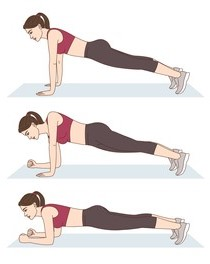

Pushups
- Put your feet close together and place your hands slightly wider than your shoulders. The fingers point forward. => The Body should form a straight line.
- Bend your arms down so far that your chest almost touches the floor.
- Hold briefly.
- Push back in the starting postion and repeat it.
If you are a beginner, you can start on the knees.

Plank
- Place your hands on the floor, directly under your shoulders, and legs straight behind you. Make sure, that they are hip width apart.
- Keep your body straight from head to toe and engage your abs. Don't hike your hips!
- Hold as long as possible. Repeat it!
Make sure that you are holding it each time a little bit longer.

Plank pushup
- Begin in the plank position (description above) with your weigth restin on your forearms. Make sure your body is in a straight line!
- Thight your abs and don't let your hips shift.
- Push up to your hands. Each hand alone.
- Raise down to the starting position.
If you are a beginner, you can start on your knees. It will be easier.
